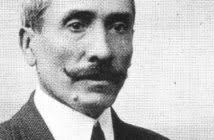

José Remigio Sarabia Rojas, quien fue un indígena mixteco que ayudó a romper el sitio de 111 días en el año de 1812 en la Guerra de Independencia en esta parte de la Mixteca, y que es considerado libertador de Huajuapan.
El presidente municipal de Santiago Nuyoó, Pedro Nicolás Bautista, refirió que llegó a Huajuapan bajo la invitación del Cabildo para rendirle tributo al indio de Nuyoó – Remigio Sarabia Rojas-, quien explicó que fue uno de los libertadores del sitio de Huajuapan en el año de 1812, en la época de la Guerra de la Independencia.
La historia destaca que en el año de 1812 el coronel Valerio Trujano decide mandar a uno de sus combatientes, Remigio Sarabia, a pedir ayuda al general José María Morelos y Pavón que se encontraba el Chilapa, Guerrero, ya que no tenía municiones y la gente estaba en riesgo de morir, por lo que requería su ayuda.
La oralidad de la Huajuapan y Santiago Nuyoó indica que Remigio Sarabia Rojas logró burlar las tropas realistas vestido de cochino, sin embargo, la autoridad de Santiago Nuyoó informó que este 2024 que hay un estudio en esta comunidad mixteca que confirma que Remigio perteneció a una legión de hombres nahuales, que se convertían en un animal y una persona al mismo tiempo y que fue con este don natural que logró vencer a las fuerzas realistas.
nació el 19 de septiembre de 1778
22 de julio de 2024



esta informacion fue sacada de WILKIPEDIA